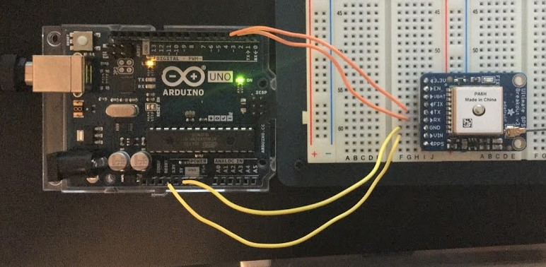
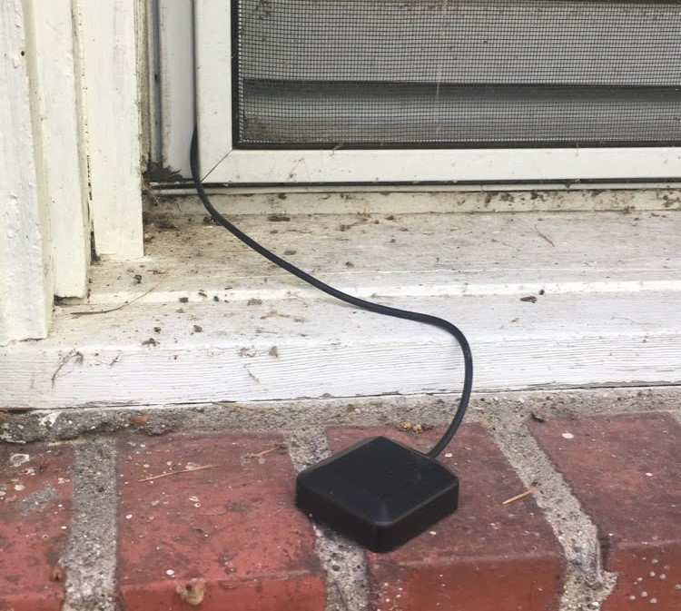
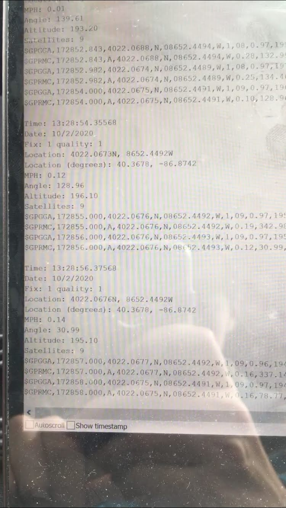
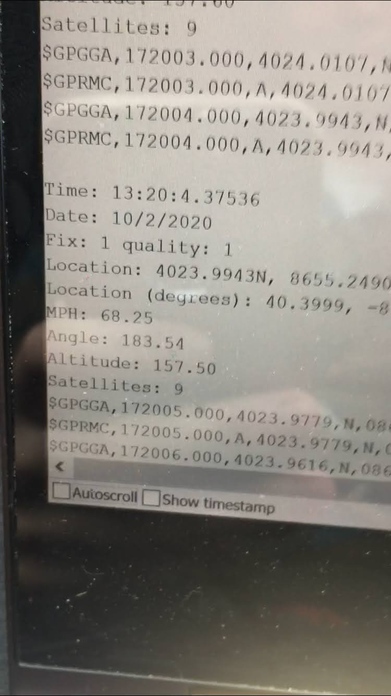

Progress Report for Peter Sumner
Week 1:
Date: 9-9-2020Total hours: 6
Description of design efforts:
 Figure 1: Constellation of Orbiting Satellites [1] |
Only basic functionality of a GPS is needed to receive coordinate and alititude data as required for the project. Since the GPS
requirements are minimal, the feature I determined to be most important was power consumption. The goggles will be battery operated for hours at
a time and selecting low power components is key. Some modules, like the MTK3339 by Adafruit, have a sleep mode that can be activated to lower
consumption further [2]. The GPS will only be actively receiving when requested by the user so this could be a useful fucntion. |
The next step is to aqcuire the physical GPS module and begin experimenting with its functionality.
Week 2:
Date: 9-18-2020Total hours: 6
Description of design efforts:
| This week I ordered a GPS breakout, specifically the Ultimate GPS Breakout from Adafruit [3]. Unfortunately, the parts did not arrive in time
to begin working with the module this week. Nevertheless, I did some digging to determine how to properly program the GPS and set up a testing
environment with Arduino. Adafruit has published a GPS library compatible with the module that is open-source and can be found on GitHub [4].
The relevant functions and variables to this project are found in the header file. The GPS module can be connected via either SPI or I2C and in
addition to housing functions, the library also contains basic examples for how each could be structured.
|
 Figure 1: Ultimate GPS Breakout [3] |
 Figure 2: Experimental Setup With Arduino | A portion of an Arduino script is shown on the left that establishes working communication with the GPS module. The setup section
sets the baud rate and configures the GPS output. It then enters a loop as the GPS receives and digests data. GPS data is packaged in the form of National Marine
Electronics Association (NMEA) sentences [5]. Each sentence contains all of the data collected for a specific point in time. When the GPS receives an NMEA sentence
each variable must be extracted individually. As data for each of the individual variables is collected it is printed to the console output. Once the hardware portion is implemented, this will enable me to assess the accuracy of data received as well as mirror the display a goggle wearer will have in the final implementation of the project. |
Week 3:
Date: 9-25-2020Total hours: 16
Description of design efforts:
|
 Figure 1: Arduino GPS Module Wiring |
 Figure 2: GPS Antenna Setup |
 Figure 3: GPS Data Captured From Arduino Serial Monitor |
Week 4:
Date: 10-2-2020Total hours: 10
Description of design efforts:
The actual location data for this point is:
Latitude: 40.3680
Longitude: -86.8755
Altitude: 193m [6]
And the reported GPS data was:
Latitude: 40.3678
Longitude: -86.8742
Altitude: 195.1
Considering I took the measurements from the parking lot and could not go inside for the most accurate results, these numbers are quite acceptable. I configured the GPS to print an update on its current state every second and noticed that while the coordinates remained consistent, the altitude data would change a bit each time but remained within about two meters of the target value. For the future, I think altitude may need to be calculated as the average of several measurements.
I also wanted to make sure that the GPS was not lagging as it reported data. This would have been difficult to test using purely coordinate data because I didn't know what my coordinates should have been at every data point. I also didn't trust that comparing to another GPS would be guarantee unbiased results. I instead used speed as the metric to verify that the GPS was updating fast enough. In a car it was very easy to check the correct speed by looking at the odometer. While driving around, I quickly found out that the GPS was giving speed in knots and made that adjustment to my code.
Below is some footage from the excursion that shows the GPS in action. The first video in Figure 1 shows the location data from Igloo and Figure 3 shows the car's odometer compared to the GPS output. Figures 2 and 4 show screenshots from the videos to more easily read the data.
|
Figure 1: GPS Location Verification |
 Figure 2: GPS Data Captured From Arduino Serial Monitor |
|
Figure 3: GPS Speed Verification |
 Figure 4: GPS Data Captured From Arduino Serial Monitor |
Sources Cited:
[1] "GPS Basics," sparkfun.com. 2020. [Online] Available at: <https://learn.sparkfun.com/tutorials/gps-basics/all> [Accessed 9 September 2020].
[2] "Ultimate GPS Module," Adafruit Industries. 2020. [Online] Available at: <https://www.adafruit.com/product/790> [Accessed 8 September 2020].
[3] "Adafruit Ultiamte GPS Breakout," Adafruit Industries. 2020. [Online] Available at: <https://www.adafruit.com/product/746> [Accessed 15 September 2020].
[4] "Adafruit_GPS," GitHub. 2020. [Online] Available at: <https://github.com/adafruit/Adafruit_GPS> [Accessed 16 September 2020].
[5] "NMEA Data," GPSInformation.org. [Online] Available at: <https://www.gpsinformation.org/dale/nmea.htm#intro> [Accessed 16 September 2020].
[6] "Find Google Maps Coordinates," mapcoordiantes.net [Online] Available at: <https://www.mapcoordinates.net/en> [Accessed 2 October 2020].